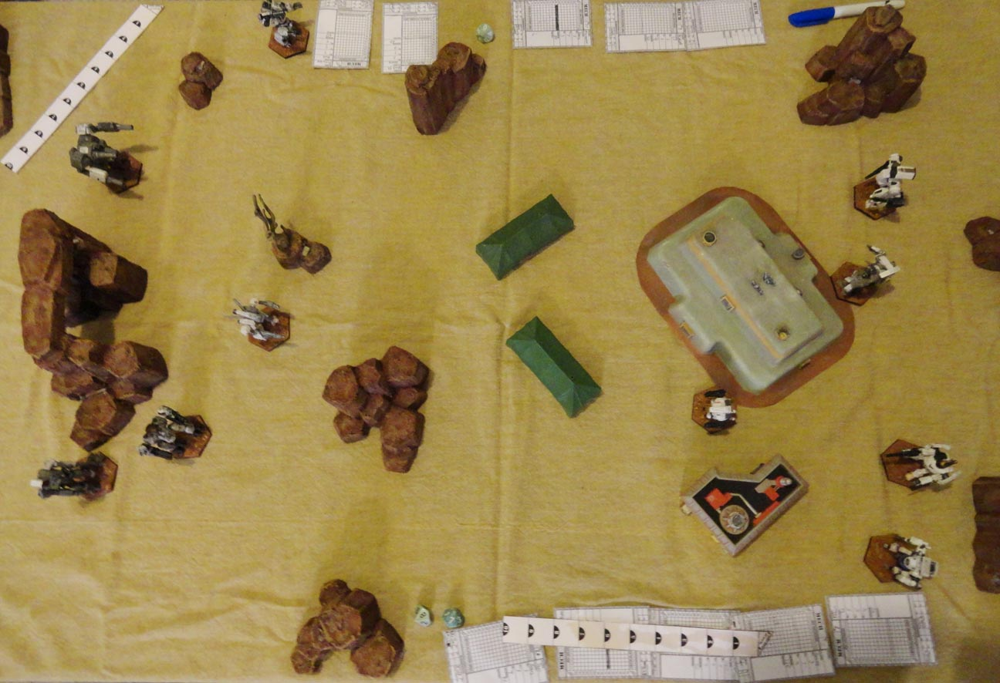
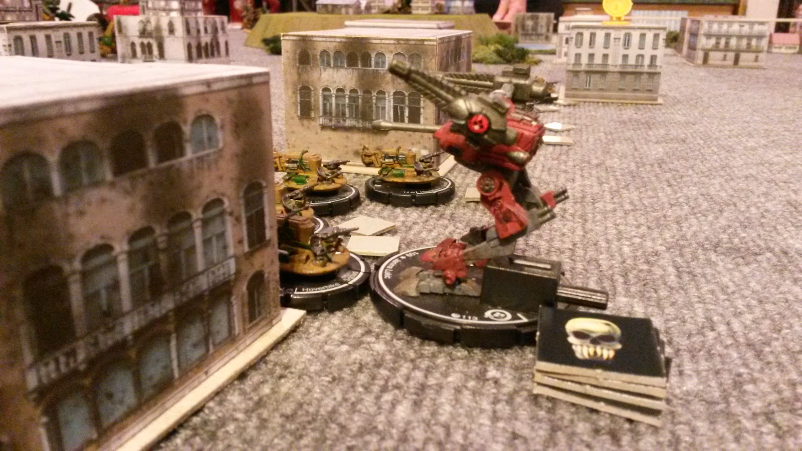
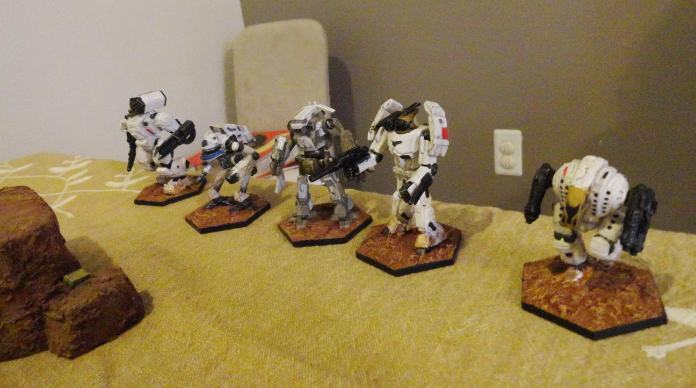

MechWarrior Revived is a modernized, fan-made take on MechWarrior: Dark Age, played with your existing MW:DA clix figures and their combat dials. Two players command armies of BattleMechs, vehicles, and infantry.
1 How the game works
You take turns moving and fighting with your models. Position matters: terrain protects your troops, and taking ground can matter more than destroying the enemy.
Models and bases
Each miniature is one unit. Its base is the plastic stand beneath it. Measure from the base, not the sculpt.
- ’Mechs are walking war machines. Each acts on its own.
- Vehicles include tanks and other ground vehicles. Each acts on its own.
- Infantry act in squads of two or three bases. Battle armor represents troops in powered suits and forms separate squads.
Squad members keep their own dials. Sharing a squad does not combine their weapons or damage.
Reading the combat dial
Use the numbers currently showing in the base’s window:
| Value | What it tells you |
|---|---|
| Speed | How far the model can move, in inches |
| Attack | The number added to an attack roll |
| Defense | The total an enemy must reach to hit this model |
| Damage | How many clicks a normal hit can cause |
Weapons also have printed ranges. Colored backgrounds identify special equipment.
Each point of damage turns the combat dial one click toward destruction. The new position may change the model’s values or equipment. Always use what is showing now. Three bullet holes mean the model is destroyed.
Example: A tank takes 2 damage. Turn its combat dial two clicks, then use the values at that position for its next action.
2 What you need
You need your models, terrain, a ruler or tape measure marked in inches, and three six-sided dice: two white and one other color.
Use markers to show which models or squads have acted, plus extra markers for vehicles and infantry. Keep the round and score on paper. Some missions need objective markers.
The table dimensions depend on the game size. Force building and deployment come after the play rules below.
3 Rounds and activation


A round gives each surviving part of both armies one chance to act. During the round, players alternate activations.
An activation group is one ’Mech, one vehicle, or one infantry squad. Activating a group means choosing what it does, resolving its actions, and marking it as finished for the round.
- Remove activation markers. Roll one die each and reroll ties. The winner chooses who goes first.
- Take turns activating one group that has not acted. Mark it when finished.
- Once every group has acted, score the scenario and check for victory. Begin the next round if the game continues.
Clearing activation markers does not reset other markers or dials.
Example: You activate a ’Mech. Your opponent activates a tank. You then choose another ’Mech, a vehicle, or a squad that has not acted yet.
Squad activations
A squad chooses one action together. Finish each member separately, using its own speed, target, and attack roll. Mark the squad finished after all its members have acted.
Passing
You may pass only when you have fewer groups left to activate than your opponent. If you have none, you must pass. Count every unactivated group, including passengers and groups that cannot attack. Passing spends no activation and changes no markers or dials.
Example: You have two groups left and your opponent has four: you may pass. With two groups each, you must activate one.
4 Actions
An action is what a group does during its activation. Vehicles and squads choose one. A ’Mech may take up to two, finishing the first completely before choosing the second.
Everyday actions
A ranged attack shoots at a target. A close attack fights an enemy touching your base.
| Action | What you do |
|---|---|
| Move | Move up to your speed; do not attack |
| Fire | Stay in place and make one ranged or close attack; may pivot for close combat |
| Advance | Move up to half speed, then make one ranged attack |
| Assault | Infantry or ’Mech: move up to half speed, then make one close attack |
| Rush | Move up to twice your speed; no attack; uses the whole activation |
| Hold | Stay still; no attack; uses the whole activation |
Use current speed, including any heat modifier, never less than zero. Halve or double it for the action, rounding half speed up. Then add any movement bonuses. You may move less than the allowance. Read speed and equipment again before each action.
Example: At speed 7, Move allows 7 inches, Advance allows 4, and Rush allows 14, before terrain costs or equipment bonuses.
Advance and Assault combine movement and an attack in one action. A ’Mech can follow either with another action. Move then Fire spends both actions to travel farther and attack once.
A ’Mech may repeat an action, but Rush and Hold cannot be combined with another action. Its second action adds 1 heat; see Heat for action costs and cooling. Move and Hold let vehicles and squads recover.
Other actions
Use Disengage to leave enemy contact, or Vent to cool a ’Mech. Equipment, jump attacks, and transports have their own actions, described with those rules.
You may check whether an action is possible before choosing it. If you declare an action you cannot finish, carry out the legal parts and lose any unavailable attack. Its heat or readiness and pushing costs still apply.
Example: A tank Advances toward an enemy but ends beyond its weapon’s range. It stays where it moved and loses the shot.
5 Movement and facing
Measure distances between base centers unless a rule says the bases must touch. Measure movement along the route taken. Your whole base must fit along that route: it cannot overlap another base, cross blocking terrain, or squeeze through a gap narrower than itself. This includes friendly bases.
Turning and facing
Vehicles and ’Mechs have front and rear arcs marked around their bases. These show which direction they face. Infantry can attack in any direction and have no rear arc. If a rear arc is missing, agree on a rear 90-degree arc before play. A line exactly on its boundary gets no rear bonus.
You may turn during any action that allows movement, even if you move no distance. Before a close attack with Fire, you may pivot in place: keep your base center fixed, keep all existing enemy contacts, and do not overlap other bases or illegal terrain. This needs no Assault action or extra heat. You cannot pivot before a ranged Fire attack, during Hold, Vent, or Repair, or in response to an enemy action.
Example: An enemy touches your ’Mech’s rear. If a legal pivot keeps that contact, Fire lets you turn and make a close attack. It does not let you turn for a ranged shot.
Enemy contact
Stop when your base touches an enemy. You are now engaged.
While engaged, you may make a close attack with Fire or Assault in place, Hold, Vent, or Disengage, subject to equipment, readiness, or shutdown limits. Fire and Assault may pivot to face the enemy, but cannot move away. To leave contact, use Disengage.
To Disengage, take 1 unavoidable damage before moving if any touching enemy is not shutdown. Pay once, however many enemies touch you. If destroyed, remove the unit. Otherwise move up to half speed, without touching a new enemy. A pilot or equipment may remove the damage cost. There is no damage cost if all touching enemies are shutdown.
Example: Two enemies touch a vehicle. Disengage costs it 1 damage in total. If its speed is still 8 afterward, it may move up to 4 inches and cannot attack.
No other movement or ranged attack is allowed while engaged. Repair, Coolant Flush, boarding, and unloading are also forbidden. Bypass may be attempted in place, including a pivot. Vehicles need Flamers or Bypass to fight close. In a recovering squad, engaged members may Hold or Disengage while the others Move or Hold.
A unit with zero speed cannot change position. It may still pivot and make a close attack with Fire or Assault; if it has no legal attack, Hold or Vent instead.
Stay on the board unless a scenario allows an exit. If the sculpts prevent bases from touching, agree where the bases would meet; use the bases, not overhanging models, for measurements.
6 Terrain and sight
Mark each terrain area clearly. A unit is in terrain when its base center is inside or on the edge. Blocking terrain is different: no part of a base may overlap it.
Each inch moved through difficult terrain costs 2 inches of movement; other ground costs 1. Do not round these distances. Ignore height, roofs, building damage, and deep water.
Example: A route crosses 2 inches of open ground and 1.5 inches of woods. It costs 2 + 3 = 5 inches of movement.
| Terrain | Movement | Cover and sight |
|---|---|---|
| Open ground or road | Normal | No cover |
| Woods or rubble | Difficult for everyone | Ranged defense: +3 infantry, +2 battle armor, +1 vehicles and ’Mechs |
| Fieldworks | Infantry only; normal movement | Infantry: +4 ranged defense and +2 close defense. Battle armor: +3 ranged defense and +1 close defense |
| Blocking building or rock | Impassable | Blocks direct line of sight |
| Shallow water | Difficult, except for hover vehicles | No cover or extra cooling |
Fieldworks are trenches or narrow ruins. Vehicles and ’Mechs may touch their boundary, but no part of their base may enter or cross the interior. Leave room to go around.
Line of sight: Draw a line between attacker and target centers. It must pass through the attacker’s front arc, unless the attacker is infantry. A line that crosses or just touches blocking terrain is blocked. Woods and rubble do not block sight.
Example: A shot clips the corner of a building’s marked footprint: direct fire is blocked. A gap between the scenery pieces on that footprint does not create a firing lane.
Intervening ’Mechs block direct sight. Vehicles also block it when neither attacker nor target is a ’Mech. Infantry never block sight. Indirect Rocket fire ignores these blockers.
Example: Infantry standing between two ’Mechs do not block their shot. Another ’Mech standing on that same line does.
Never shoot at a friendly unit or an enemy touching a friendly unit, even with indirect fire.
Cover: Use the target’s terrain, not terrain crossed by the shot. Take the single best cover bonus, up to +4 ranged defense. Equipment defense is separate. Woods and rubble give no close defense. Fieldworks give +2 close defense to infantry and +1 to battle armor.
Example: Infantry with defense 17 and its center on a woods edge has ranged defense 20. If its center is outside the woods, a shot crossing those woods gives it no cover.
7 Combat


An attack is a roll to see whether one model hits an enemy. A ranged attack shoots at a target within the weapon’s range. A close attack fights an enemy touching your base.
Roll all three dice and add your Attack. Equal or beat the target’s Defense to hit. A normal hit causes the weapon’s Damage, adjusted for armor and other effects.
Example: Your Attack is 8 and the dice total 11. Your total of 19 hits Defense 18. With Damage 3 and no other modifiers or armor, the target takes three clicks.
Choosing a target and weapon
Each base attacks separately. Normally an attack has one enemy target and one roll; ignore extra target symbols.
For a ranged attack, choose one printed damage value and its matching range and weapon type. A target exactly at minimum or maximum range is in range. Melee weapons cannot shoot.
For a close attack, infantry use their damage value. ’Mechs use primary damage or a value marked melee. The front arc must touch the target; infantry may attack in any direction. Vehicles need Flamers or Bypass to make a close attack. Ranged weapon benefits and costs do not apply to close attacks. Melee damage colors apply only to a printed Melee weapon; Flamers has its own close rule.
You need printed attack above zero and damage above zero after heat to attack, and cannot attack in Salvage. Bypass needs positive attack but no damage value. A unit with zero attack or damage may still move, carry troops, and contest objectives.
Read values and equipment when declaring an attack. Use them for that whole attack, then read the dials again for the next one.
Attack sequence
- Choose the action, target, weapon, and any pilot or equipment effects. Check range, facing, sight, and contact.
- Roll all three dice. Add their total to your attack value and modifiers. Equal or beat the target’s defense to hit.
- Both white dice show 6: hit automatically and add 1 damage. Both show 1: miss automatically and take 1 unavoidable damage. The third die does not change either result.
- On a hit, work out damage below and click the target’s combat dial. Stop at three bullet holes: the unit is destroyed. Remove it; never click past destruction.
- Apply any heat dealt to the target by equipment, including its stress check. Then apply the attacker’s heat or pushing damage. For Death from Above, pay landing damage before attacker heat. A surviving attacker still pays after a critical miss. Finish this before starting the next squad member.
| Situation | Modifier |
|---|---|
| Advance | No attack penalty |
| Ballistic shot after moving or turning | −1 attack for recoil; Gunner may remove it |
| Indirect Rocket shot | −2 attack |
| Shot enters a vehicle or ’Mech’s rear arc, or close attack touches its rear | +2 attack; not for indirect fire |
| Shutdown target | −2 defense |
| Death from Above | Target gets +2 defense |
| Target in cover | Use the terrain table |
| Your pilot or equipment | Use its card or reference |
Rear, shutdown, and Death from Above modifiers add together. There are no extra modifiers for range bands, a moving target, nearby allies, or squad size.
Example: Attack 8 + dice totaling 11 − 1 Ballistic recoil = 18. That hits defense 18, but misses defense 19.
Example: White 6/6 and a third die showing 1 still hit automatically and add 1 damage. White 1/1 still miss with a third die showing 6.
Ranged weapon types
| Type | Benefit | Cost |
|---|---|---|
| Ballistic | +1 damage against infantry or battle armor with no terrain cover | −1 attack if you moved or turned before firing |
| Energy | Piercing: ignore 1 point of armor | Firing ’Mechs gain 1 extra heat. Damage against infantry is limited to 2 before armor |
| Rocket | Can fire indirectly through terrain and intervening bases | Fire action only. Indirect shots take −2 attack and −1 damage |
For the Ballistic bonus, check the target’s cover before any equipment reduces or ignores it. Ballistic and Rocket shots add no extra weapon heat. Energy’s damage limit applies to all firers, including those that do not track heat.
Declare a Rocket shot direct or indirect before rolling. Direct shots follow normal sight rules. Indirect shots ignore blockers, but still need the correct arc and range. The attacker must be unengaged, and the target cannot touch a friendly unit. Keep the target’s cover; indirect fire gets no rear bonus. It needs no spotter and hits only one target.
See the weapon reference for labels and examples.
Advance has no attack penalty of its own. Moving or turning earlier in the activation causes −1 attack for Ballistic recoil, including on a later Fire action. Gunner removes it during an Advance if that Advance’s movement costs no more than half speed, rounded up; equipment may allow an Advance beyond that limit.
Rockets can shoot only with Fire, and the firer must keep the same position and facing for its whole activation. Moving or turning prevents Rocket fire later in the activation; after firing Rockets, it cannot move or turn.
Damage and infantry assaults
Work out damage in this order:
- Printed damage plus its heat modifier, at least zero.
- Weapon bonus or penalty, then equipment and pilot bonuses (+1 combined maximum). Add battle armor’s close bonus, Death from Above’s +2, and any critical-hit bonus separately. Damage cannot fall below zero.
- Apply the damage limits below, including any critical bonus.
- Subtract the best armor, up to 2. Ordinary Piercing ignores 1; Armor Piercing equipment ignores all armor. Extra sources of ordinary Piercing add nothing. Then apply anti-missile protection and Agility if applicable. Damage may be zero. See equipment.
| Attack | Damage limit or bonus |
|---|---|
| Infantry against a vehicle or ’Mech | At most 1 damage before armor |
| Exposed close assault by infantry | At most 2 before armor, with Piercing |
| Battle armor close attack against a vehicle or ’Mech | +1 damage and Piercing |
| Energy shot against infantry | At most 2 before armor |
An infantry close assault is exposed if the attacker touches the target’s rear, the target is shutdown, or the attacker stands in woods, rubble, or fieldworks when attacking. Other attacks have no damage limit based on unit type. Energy does not heat the target automatically.
Example: Infantry with damage 3 hit an armored ’Mech’s open front. The limit of 1, then Armor 1, leaves no damage. Attacking from the rear raises the limit to 2 and adds Piercing: 2 damage. Battle armor with damage 2 deals 3 in close combat against that ’Mech, even from the front.
Example: An Energy shot deals 3 damage against a vehicle with Armor 2 that applies to Energy. Piercing ignores 1 armor, leaving 2 damage. It adds no heat to the target.
Equipment actions
Named equipment can grant an extra attack, affect nearby enemies, or support a friendly unit. Bypass is the only way to capture a unit. There are no combined attacks, ordinary spotting bonuses, reaction shots, rams, or charge damage.
Colored Attack values can grant Repair (restore a friendly combat click), Coolant Flush (remove friendly ’Mech heat), or Bypass (capture a crippled enemy). Use the conditions and limits in the equipment reference.
Death from Above
A ’Mech with Jump Jets (blue speed) may leap onto an enemy vehicle or ’Mech. It must start its activation unengaged and not in Salvage, with speed above zero, printed attack above zero, and primary damage above zero after heat. Infantry and vehicles cannot make this attack; infantry cannot be its target. DFA always has one target and one attack: Full Strike and Rapid Strike do not apply.
- Declare DFA and its target before moving. Jump up to your current speed, ignoring bases and terrain along the route. Move some distance and land legally, with your front arc touching the target and no other enemy. Place your base beside the target, never on top of it. You cannot land in fieldworks.
- Make one close attack. The target gets +2 defense for this attack. Use your primary damage with +2 damage on a hit. Normal rear, shutdown, close equipment, pilot, critical, and armor rules apply. The +2 damage is separate from the equipment/pilot limit. Ranged weapon effects do not apply.
- Pay for the landing. After resolving the attack and any heat dealt to the target, take 1 unavoidable damage on a hit or 2 on a miss. This is additional to critical-miss damage: white 1/1 can cost 3 damage in all. A hit that deals zero damage still uses the hit cost. Skipping the attack after jumping uses the miss cost.
- If still alive, gain 2 heat, plus 1 if this is your second action. The base 2 includes Jump heat; do not add it again. Stop at destruction if the landing damage destroys you. DFA grants no extra attack, target pivot, or displacement. Surviving units stay where they landed, even on a miss.
DFA uses one action. If it was the first, a surviving ’Mech that is not shutdown may take its second action normally. Enemy contact still limits its choices.
Example: As its first action, a speed-8 ’Mech jumps 6 inches into a vehicle’s front. Attack 8 plus a dice total of 12 reaches its defense 18 + 2, so it hits. Primary damage 3 becomes 5; Armor 1 reduces that to 4. The attacker takes 1 unavoidable damage, then gains 2 heat if it survives. On a miss, the target takes no damage and the attacker takes 2 landing damage instead.
8 Heat
Heat measures the strain on a ’Mech. Track it on the separate heat dial, starting at the green position. Heating moves that dial toward penalties and, eventually, shutdown. Cooling moves it back toward Start.
’Mechs use their printed heat tracks. Apply the printed speed and damage modifiers to the matching values, never below zero. Use the rules here instead of the original named heat-color effects. Infantry and vehicles ignore heat.
Example: Printed speed 7 and a −2 heat modifier give speed 5: Advance up to 3 inches, Move up to 5, or Rush up to 10, before terrain costs.
Action heat
| Action | Base ’Mech heat |
|---|---|
| Move | 0 |
| Fire | 0 |
| Advance | +1 |
| Assault | +1 |
| Rush | +1 |
| Disengage | +1 |
| Repair | +1 |
| Coolant Flush | +1 |
| Bypass | +1 |
| Death from Above | +2, including Jump |
Hold and Vent cool instead of heating. Energy shooting, Jump, and some equipment add heat to these base costs.
A ’Mech adds 1 extra heat per action if it rolls an Energy ranged attack. Add this to the action heat and any second-action heat, even on a miss. Pay the action’s heat even if you skip a shot or cannot make it; add no Energy heat without a roll. Destroyed ’Mechs take no further heat. Pulse and Rapid Strike add attacks within an action; they do not use the ’Mech’s other action.
Example: A ’Mech Advances as its first action but finds its target out of range. It makes no attack and still gains 1 heat. It adds no Energy heat because it rolled no Energy attack.
Second actions
A ’Mech’s second action adds 1 heat to that action’s normal cost. Finish the first action, including its heat, stress roll, and damage, before choosing the second. Use the new dial values. Both actions belong to one activation; mark the ’Mech activated after it finishes.
Rush, Hold, and Vent use the whole activation. Choose one of these alone. They cannot follow or precede another action. Reaching shutdown or destruction ends the activation immediately. A ’Mech that restarts by Venting cannot act again that round.
Example: A ’Mech Moves, then Fires a Ballistic weapon. Move and Fire each have 0 base heat; the second action adds 1, for 1 heat in all. The shot has −1 attack for recoil.
Example: A ’Mech Fires Energy twice. The first action adds 1 Energy heat; the second adds 1 Energy heat and 1 second-action heat. Total: 3 heat. Read the heat dial before the second shot.
Example: A ’Mech is one click from shutdown. Its first Energy shot shuts it down, ending its activation. It cannot take a second shot or Vent until its next activation.
After each action, add its base heat, any Energy or Jump heat, equipment heat, and 1 heat if it was the second action. Turn the heat dial one click at a time. Stop at the first position showing three shutdown symbols and discard excess heat. Shutdown ends the activation. Never wrap around to cold.
Heat warnings
Stress: After each complete heat gain, check the dial. If the ’Mech is not shutdown and any heat background is colored other than green or plain white, roll one die:
- 1: Take 1 unavoidable combat-dial damage.
- 2–6: No effect.
Roll only once per heat gain, even with several colored warnings. An action that gains no heat causes no stress roll. A number without a colored background does not trigger stress. Stress damage adds no heat. Cooling never causes a stress roll.
Example: A ’Mech Jumps during its first Advance and fires Energy: 1 action + 1 Jump + 1 Energy = 3 heat. Add it as one gain, then make one stress roll if a warning is showing and it is not shutdown. The same Advance as a second action would cost 4 heat.
Shutdown
A ’Mech showing three shutdown symbols can only Vent. It cannot move, turn, attack, control or contest objectives, or use pilots other than Engineer. Passive defense equipment still works. Enemies get the shutdown defense modifier and exposed-assault benefit.
Example: Shutdown is two clicks away when a ’Mech gains 4 heat. Turn only those two clicks, stop at shutdown, and discard the rest. Do not roll for stress.
Cooling
Hold cools 1. Vent cools the printed vent rating, at least 1; Engineer adds 1. Either uses the whole activation and gains no second-action heat. Turn toward the green starting position and stop there. When the shutdown symbols disappear, the ’Mech restarts, but its activation is already spent. There is no extra cooling at round end.
Example: Vent rating 2 with Engineer cools 3 clicks. If that restarts the ’Mech, it still cannot take another action this round.
9 Vehicles and infantry
Readiness and pushing
Each vehicle and each infantry squad starts Ready. Its readiness shows whether it can fight again or needs to recover. ’Mechs use heat instead.
| Before a Fire, Advance, Assault, or Bypass order | After declaring it | Cost |
|---|---|---|
| Ready | Committed | None |
| Committed | Spent | Each surviving base takes 1 unavoidable damage after finishing its action |
| Spent | Must recover | No combat order allowed |
The second combat order is pushing. It need not happen in the very next round: readiness stays until the group recovers. Pay pushing damage even if a base misses, skips its attack, or has no legal target. A critical miss deals its own damage first; a surviving attacker still pays pushing damage. Stop at destruction and never transfer a casualty’s cost to another base.
Example: A vehicle Fires, Rushes next round, then Fires again. Rush left it Committed, so the second Fire pushes it and costs 1 damage afterward.
Example: A Committed vehicle Fires and rolls white 1/1. It takes 1 critical-miss damage, then 1 pushing damage if still alive. Armor stops neither.
To recover, choose Move or Hold. After the group finishes, set it to Ready. Move uses full speed with no attack; Hold stays still. While engaged, use Hold or Disengage instead. In a recovering squad, each member may Move or Hold; an engaged member must Hold or Disengage. Keep the squad together. Disengage keeps its normal damage cost and half-speed limit.
Example: One member of a Spent squad Holds in enemy contact while the other two Move back into its chain. The squad becomes Ready; none of its damage is healed.
A Spent group must recover on its next activation. Rush, Repair, Coolant Flush, Embark, and Disembark leave readiness unchanged and are forbidden while Spent. Recovery never heals damage, grants another activation, or prevents a unit from contesting objectives. Black Attack means Salvage: that unit may only Move, Hold, Vent, or Disengage. See equipment for salvaged squad members and Command's linked activations.
Squad orders
Choose one action for the whole squad, then finish one base before starting the next. Each base uses its own speed, weapon, and target, and rolls its own attack. A base unable to carry out part of the action skips that part; it cannot choose a different action. Read the target’s new dial after every attack. Destroyed units cannot act. Recovery and regrouping have an exception for bases that must Disengage, described below.
Example: A three-base squad chooses Fire. Two members shoot different enemies; the third has no legal target and skips its shot. The whole squad has activated.
Keeping squads together
At deployment and at the end of an activation, a squad must form one connected chain. Neighboring base centers can be no more than 4 inches apart. Bases may move out of that chain while the squad is acting, but must finish together.
If casualties or a destroyed carrier leave a squad split, it must regroup next activation, even if Spent. Each base may move up to its speed, Hold if already in place, or Disengage if touching an enemy. It cannot attack, repair, board, or score an exit. Rejoin the chain if possible; otherwise close the gaps as much as possible. Finishing this activation clears readiness, even if the gaps cannot all close; a squad still split must regroup again next time. No one takes damage just for being out of formation. A lone survivor always counts as together.
Example: A–B–C form a straight chain with 4 inches between neighbors. A and C may be 8 inches apart. If B is destroyed, the survivors must regroup next activation.
10 Transport
Each carrier holds one whole infantry squad. No partial squads, mixed squads, vehicles, or ’Mechs may ride. Keep passengers beside the roster with their current dials and readiness. Carrier and squad always track readiness separately.
Passengers may Hold or Disembark on their squad’s activation. Hold clears their readiness. A Spent squad must Hold before it can unload on a later activation. Boarding, unloading, and forced evacuation never clear readiness. Passengers cannot attack, repair, be targeted, use equipment, or control objectives while aboard. The carrier follows its own action and readiness rules.
Example: A Ready carrier has Spent passengers. The squad Holds aboard and becomes Ready. The carrier may act separately; the squad must wait for a later activation to unload.
Embark
Activate the squad. Each base may move up to its speed without attacking. To board:
- Every surviving member must finish within 3 inches of the same empty friendly carrier’s center.
- The squad must form its usual 4-inch chain.
- Neither the carrier nor the squad may touch an enemy.
Remove the squad and mark it activated. If any condition fails, the bases stay where they finished moving and their activation is spent. The carrier may take its own activation before or after boarding.
Example: Two squad members reach the carrier, but the third ends 4 inches from its center. Nobody boards; all three stay on the table and the squad has acted.
Disembark
Activate the passenger squad. Its carrier must not touch an enemy. Place the whole squad within 3 inches of the carrier’s center, in legal terrain, in its 4-inch chain, and outside enemy contact.
This uses the squad’s activation: no further move, attack, or boarding. If the whole squad cannot fit, it stays aboard; the failed Disembark still uses its activation and leaves readiness unchanged. The carrier’s activation is unaffected.
Example: Only two of three passengers can fit legally beside the carrier. All three remain aboard, with the squad’s activation spent.
Carrier destroyed
Finish the attack, then give each passenger 1 unavoidable damage. Remove casualties and the carrier. Place survivors within 3 inches of the carrier’s former center, in legal terrain and outside enemy contact; you may use the space the carrier occupied.
Save as many bases as can fit. Remove any that cannot be placed. Mark the surviving squad activated, even if it had not acted, and keep its readiness. If it is split, it must regroup next round. Leave no wreck.
Example: Three passengers take 1 damage each when their carrier is destroyed. One dies; only one of the two survivors can be placed legally. That one survives, already activated. The other is removed.
A squad cannot board and unload in the same round or gain another activation when its carrier is destroyed. In Breakthrough, passengers exit with their carrier and score their own points once.
11 Objectives and victory
You control an objective when at least one of your base centers is within 3 inches and no enemy base center is. If both sides are present, it is contested and neither controls it.
Shutdown ’Mechs, passengers, and units that have left the board do not count. Spent and engaged units, and units with zero attack or damage, still count. Squad members may contest different sites if they keep their 4-inch chain. Moving away gives up control.
Example: Your Spent infantry is within 3 inches of a relay beside an enemy shutdown ’Mech. Your infantry controls it. If an active enemy enters the area, it becomes contested regardless of numbers.
The scenario sets when to score, how the game ends, and how to handle ties. Destroying units earns no points unless the scenario says so. Read the victory conditions before deployment.
If you run out of time, finish the round only if both players can. Otherwise record an unfinished game and the last fully scored round. Record concessions as concessions, not completed games.
If neither side has units left on the board or aboard carriers, score that round and use the scenario’s final result.
12 Build your force


Choose the battle size
Agree on one size before choosing units. Skirmish uses fewer models and is a useful first game. Standard is the size used by the sample armies. The larger sizes give you room for more units or expensive ’Mechs; expect more activations and longer rounds.
| Game size | Points per side | Table, east–west × north–south |
|---|---|---|
| Skirmish | 600 | 48 × 48 inches |
| Standard | 1,200 | 48 × 48 inches |
| Large Battle | 1,800 | 72 × 48 inches |
| Grand Battle | 2,400 | 72 × 48 inches |
Add the points shown in the unit catalog, paying for every base, including each member of a squad. Stay at or below the chosen limit. Unit costs do not change with game size. Both armies use the same size and points formula. For a close test matchup, aim for totals within 2% of the limit.
Choose the same size in the force builder. It checks the limits below, saves the size with your list, and includes it on generated card sheets. Older saved lists without a size use Standard.
Force organization
| Part of the force | Skirmish | Standard | Large Battle | Grand Battle |
|---|---|---|---|---|
| BattleMechs | 0–4 | 0–8 | 0–12 | 0–16 |
| Ground vehicles | 0–3 | 0–6 | 0–9 | 0–12 |
| Infantry squads | 0–4 | 0–9 | 0–13 | 0–18 |
| Carriers, maximum | 1 | 2 | 3 | 4 |
| Each pilot role, maximum | 1 | 2 | 3 | 4 |
These are upper limits, with no required unit types. You can field only vehicles, only infantry, or any mix, including a force with no ’Mechs. The ’Mech limit counts only ’Mechs; vehicles and infantry have their own limits.
Example: A Skirmish force may have no ’Mechs, two vehicles, and three infantry squads, provided their combined points stay at or below 600 and the other limits are met.
A ’Mech or vehicle uses one choice. The infantry-squad limit includes Infantry and battle armor squads, with 2–3 bases per squad. Carriers are designated vehicles already in the force; they add no points or vehicle slots. Every ’Mech must have one pilot, included in its cost.
At every size, the rule of three applies across the whole force, each Unique catalog ID appears at most once, and at most one ’Mech may take one Rocket test substitute. Larger games do not reset these limits for separate detachments.
Use ordinary or quad ’Mechs, ground vehicles, infantry, and battle armor. Treat quads as ’Mechs. Identify battle armor by its name or catalog category, not its equipment colors.
Choose a faction
Choose Mixed factions or one faction in the builder. A single-faction army uses only models with that exact faction on their profiles, including every infantry base and carrier. Mercenary and Gunslinger are their own factions, not automatic allies. You may field mixed armies if you prefer. Factions do not change points, pilots, or force limits. Captures during play do not change whether your starting roster was legal.
Example: A Spirit Cats force cannot include a Mercenary carrier. Choose Mixed factions to use both; neither model’s points change.
Leave out aircraft, artillery-only and aquatic-only units, colossal ’Mechs, DropShips, and units that need expansion rules. An artillery-marked ground vehicle with ordinary ranges may be used only by prior agreement; it still occupies a vehicle slot and gets no artillery attack.
Rule of three
Check the unit family on each catalog datasheet. Ranks, factions, variant codes, named versions, and Rocket substitutions do not reset the limit. Three Dasher II figures fill the Dasher II allowance, even if each has a different rank or weapon profile.
For infantry, count squads, not bases. A family may appear in up to three squads. A squad of three Standard Foot bases uses one of those three choices. A mixed squad counts once toward every infantry family it contains. All squads together must still fit the limit for your game size.
A Unique figure is limited to one of its catalog ID in the whole force, even when placed in a squad. Its family limit still applies. For example, a named Atlas and two other Atlas figures fill the three-Atlas allowance.
Organize infantry squads
Each squad starts with two or three bases. Keep infantry and battle armor in separate squads; members may have different ranks or families within that category. Record every member’s catalog ID and pay its points. Squads cannot split, merge, or exchange members during play. Casualties may leave a lone survivor.
Example: Three infantry bases costing 20 points each form one 60-point squad. They use one squad slot, have three dials, and activate together.
Assign carriers, pilots, and weapons
Choose carriers from your ground vehicles, up to the limit for your game size. Each holds one whole squad of up to three bases, including battle armor. Ignore printed transport ratings. Record the carriers and any starting passengers. Embarked squads still count toward all infantry and family limits.
Give each ’Mech one Revived pilot, observing the per-role limit for your game size. A pilot affects only its own ’Mech and is lost with it. Use these cards without original pilot or gear cards.
Label each ranged damage value Energy, Ballistic, or Rocket before deployment. Follow the weapon reference, including the limit of one Rocket test substitute on one ’Mech per force. Use that substitute’s cost. Keep labels, pilots, and costs for the whole game. There is no ammunition tracking.
Check the roster
Before deployment, exchange rosters and check the game size, points total, unit-type limits, rule of three, Unique figures, squad members, pilots, and carriers. The sample forces show three legal Standard armies.
Set up a larger battlefield
The three full missions have two setup maps: 48 × 48 inches for Skirmish or Standard, and 72 × 48 inches for Large or Grand Battles. Select the table size on the scenario page. The wider maps include terrain for the new flanks; all placement measurements are on the diagrams. First Contact uses its own starter map.
Keep objective counts, control distances, round limits, and scoring unchanged. Breakthrough still requires 30% of the attacker’s actual starting points, rounded up. The table stays 48 inches deep so movement and escape distances do not grow with army size. These size limits and wider layouts are playtest starting points; record crowded deployments, unused flanks, and time per round.
13 Scenarios
Once you have chosen your forces, agree on a scenario. It sets deployment, objectives, round limits, and victory conditions.
First Contact is a 600-point battle with one relay and four rounds. Its two starter patrols come with printable cards. The other scenarios support all four game sizes.
Deployment
Set combat dials to their starting marks and heat dials to their green starting positions. All vehicles and squads start Ready. If a dial is jammed, use a written copy of its track. Agree on terrain boundaries and unclear colors before deploying.
Unless the scenario says otherwise:
- Roll one die each and reroll ties. The higher roller chooses north or south.
- The other player places a group first. Alternate until both armies are deployed. A carrier and its starting passengers are one placement.
- Keep each base entirely inside its deployment zone, in terrain it can enter. Keep squads together and choose each unit’s facing.
Deployment order does not decide who acts first.
Groups with Infiltrate may deploy later and farther forward. All other deployment limits still apply.
Example: You win the side-choice roll and choose south. Your opponent places the first group. Roll initiative separately to decide who activates first.
If rules disagree, follow the scenario for deployment and victory, then any specific pilot or equipment rule, then the core rules. Examples use only the modifiers they mention.